哥布林洞穴1层
哥布林迷宫 A (Goblin_Maze)CaveMaze_HR_D.json
CaveMaze.png | 找到 6 个位置 | 自动范围: ±1600

哥布林监狱 A (GoblinPrisons_A)GoblinJail_Center_HR_D.json
GoblinJail_Center.png | 找到 1 个位置 | 自动范围: ±1600

废墟2层地牢
祭坛室 (AltarRoom)Crypt_AltarRoomAB_HR_D.json
AltarRoomAB.png | 找到 2 个位置 | 自动范围: ±1600

中庭 (Atrium)Crypt_Atrium_HR_D.json
Crypt_Atrium.png | 找到 4 个位置 | 自动范围: ±1600

双子墓地 (Twin_Cemeteries)Cemetery_01_HR_D.json
Cemetery_01.png | 找到 10 个位置 | 自动范围: ±1600

悬崖 (Cliffs)CliffBridge_HR_D.json
CliffBridge.png | 找到 1 个位置 | 自动范围: ±1600
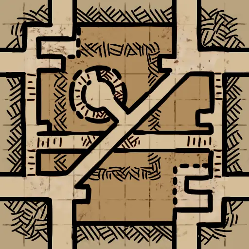
门控房间 (Gated_Rooms)ComplexHall_HR_D.json
ComplexHall.png | 找到 1 个位置 | 自动范围: ±1600

走廊 E (Hall_E)Connector_01_HR_D.json
Connector_01.png | 找到 2 个位置 | 自动范围: ±1600

大长廊 (GreatWalkway)Crypt_GreatWalkway_HR_D.json
Crypt_GreatWalkway.png | 找到 2 个位置 | 自动范围: ±1600

中心桥 (Center_Bridge)HBridge_HR_D.json
HBridge.png | 找到 5 个位置 | 自动范围: ±1600
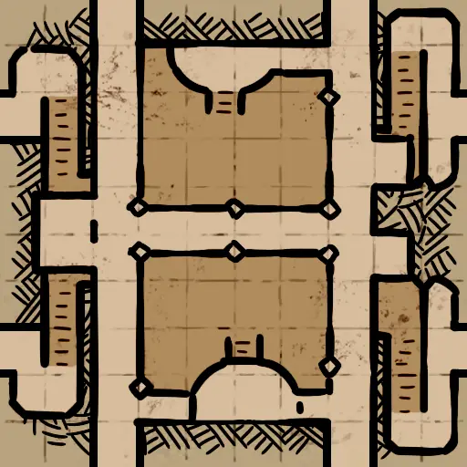
断桥 (Broken_Bridge)Crypt_LargeRoomPit_HR_D.json
Crypt_LargeRoomPit.png | 找到 2 个位置 | 自动范围: ±1600

无光陵墓 (LightlessTomb_01)Crypt_LightlessTomb_01_D.json
GoblinCaveCorner_01.png | 找到 6 个位置 | 自动范围: ±1600

牢笼 (Cage)TheCage_HR_D.json
TheCage.png | 找到 2 个位置 | 自动范围: ±1600

角斗坑 (Pit)ThePit_HR_D.json
ThePit.png | 找到 3 个位置 | 自动范围: ±1600
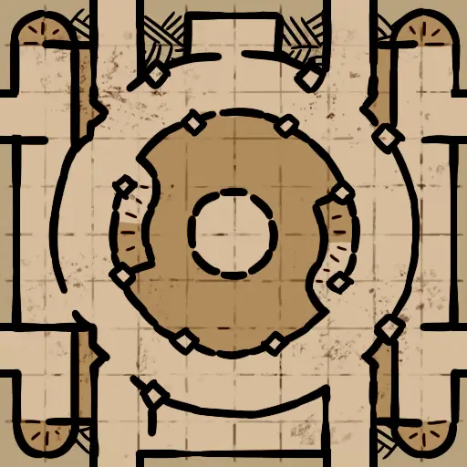
宝藏间 (Treasure_Room)TreasureRoom_01_HR_D.json
TreasureRoom_01.png | 找到 3 个位置 | 自动范围: ±1600

军械库 (Armory)Armory_HR_D.json
Armory.png | 找到 3 个位置 | 自动范围: ±1600
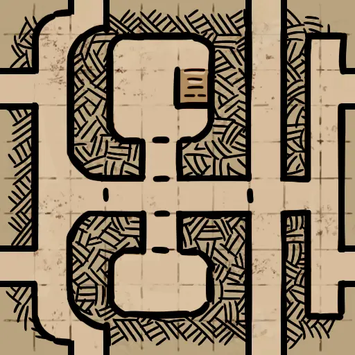
军营 (Barracks)Barracks_HR_D.json
Barracks.png | 找到 3 个位置 | 自动范围: ±1600

地下墓穴 (Catacomb)Catacomb_HR_D.json
Catacomb.png | 找到 1 个位置 | 自动范围: ±1600

墓园 (Cemetery)Cemetery_03_HR_D.json
Cemetery_03.png | 找到 4 个位置 | 自动范围: ±1600
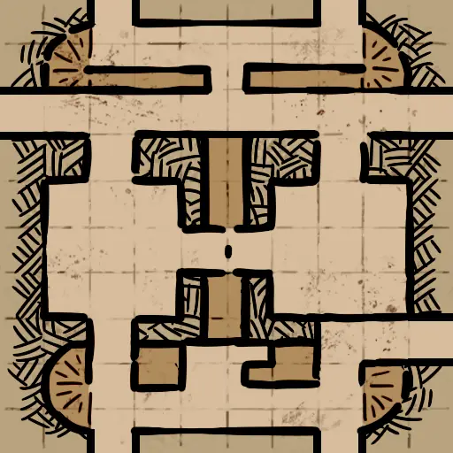
教堂 (Chapel)Crypt_Chapel_HR_D.json
Crypt_Chapel.png | 找到 1 个位置 | 自动范围: ±1600
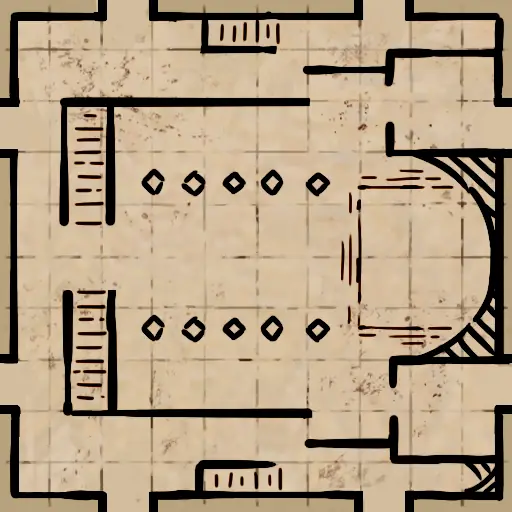
陷阱走廊 A (Trap_Hall_A)Connector_Trap_01_HR_D.json
Connector_Trap_01.png | 找到 4 个位置 | 自动范围: ±1600
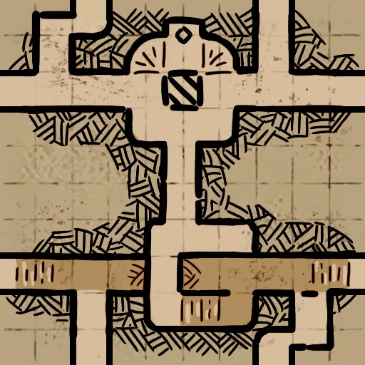
十字路口 (Cross_Road)CrossRoad_HR_D.json
CrossRoad.png | 找到 2 个位置 | 自动范围: ±1600
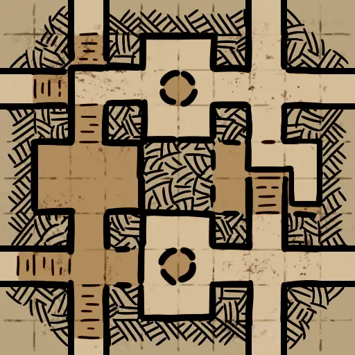
死亡厅堂 (Death_Hall)DeathHall_HR_D.json
DeathHall.png | 找到 2 个位置 | 自动范围: ±1600
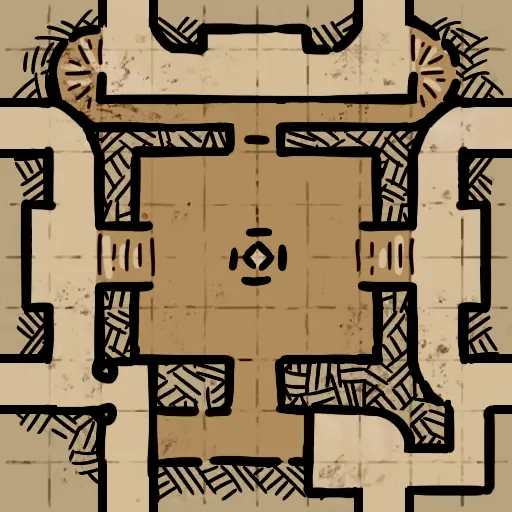
渔场 (Fishing_Grounds)FishingGround_HR_D.json
FishingGround.png | 找到 1 个位置 | 自动范围: ±1600

回廊 (Hallways)Hallways_HR_D.json
Hallways.png | 找到 1 个位置 | 自动范围: ±1600

大祭司 (High_Priests)HighPriestOssuary_HR_D.json
HighPriestOssuary.png | 找到 5 个位置 | 自动范围: ±1600
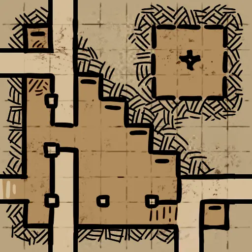
环廊 (Circular)OssuaryEdge_HR_D.json
OssuaryEdge.png | 找到 2 个位置 | 自动范围: ±1600

监狱 B (Prisons_B)Prison_01_HR_D.json
Prison_01.png | 找到 6 个位置 | 自动范围: ±1600
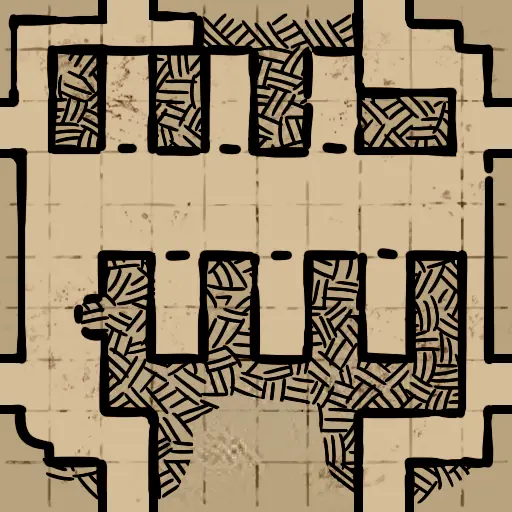
长桥 (Long_Bridge)SingleLogBridge_HR_D.json
SingleLogBridge.png | 找到 5 个位置 | 自动范围: ±1600
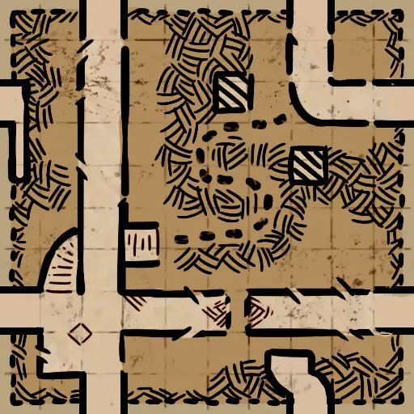
藏骨堂 (Skeleton_Rooms)SkeletonPit_HR_D.json
SkeletonPit.png | 找到 6 个位置 | 自动范围: ±1600
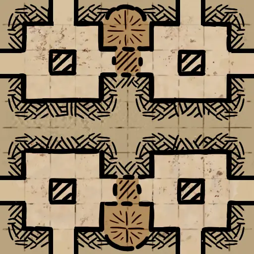
储藏室 (Storeroom)Storeroom_HR_D.json
Storeroom.png | 找到 2 个位置 | 自动范围: ±1600

沼泽 (Swamp)Swamp_HR_D.json
Swamp.png | 找到 1 个位置 | 自动范围: ±1600
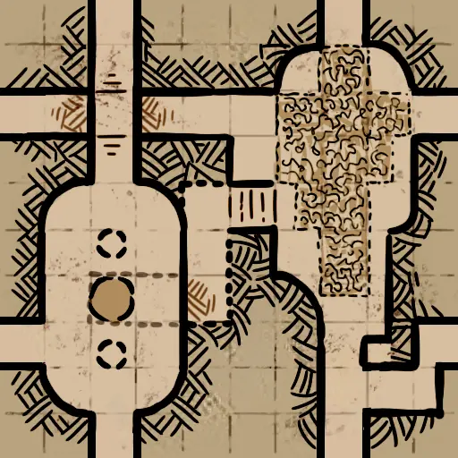
地下神坛 (Underground_Altar)UndergroundAltar_HR_D.json
UndergroundAltar.png | 找到 7 个位置 | 自动范围: ±1600

冰图2层
冰川獠牙 (IceAbyss_AbyssTooth)IceAbyss_AbyssTooth_D.json
IceAbyss_AbyssTooth.png | 找到 4 个位置 | 自动范围: ±1600

伪王座 (IceAbyss_FalseThrone)IceAbyss_FalseThrone_D.json
IceAbyss_FalseThrone.png | 找到 2 个位置 | 自动范围: ±1600

冰封之喉 (IceAbyss_FrostMaw)IceAbyss_FrostMaw_D.json
IceAbyss_FrostMaw.png | 找到 2 个位置 | 自动范围: ±1600
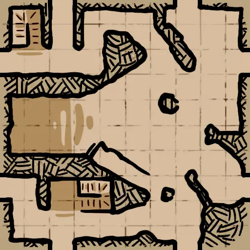
霜锢堡垒 (IceAbyss_FrozenHold)IceAbyss_FrozenHold_D.json
IceAbyss_FrozenHold.png | 找到 2 个位置 | 自动范围: ±1600

冰峡关 (IceAbyss_Glacivia)IceAbyss_Glacivia_D.json
IceAbyss_Glacivia.png | 找到 1 个位置 | 自动范围: ±1600

巨坑 (IceAbyss_GrandHollow)IceAbyss_GrandHollow_D.json
IceAbyss_GrandHollow.png | 找到 4 个位置 | 自动范围: ±1600

冰迷宫 (IceAbyss_IceMaze)IceAbyss_IceMaze_D.json
IceAbyss_IceMaze.png | 找到 1 个位置 | 自动范围: ±1600
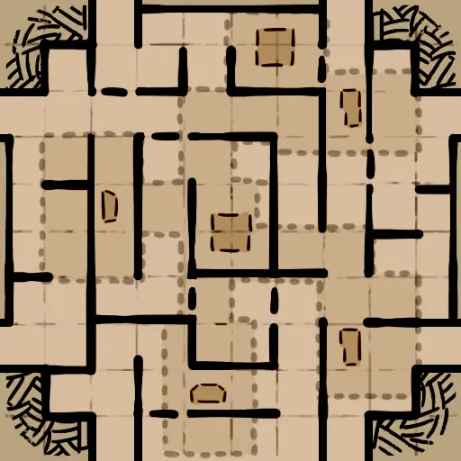
恶灵仪式室 (IceAbyss_ImpRitualRooms)IceAbyss_ImpRitualRooms_HR_D.json
IceAbyss_ImpRitualRooms.png | 找到 1 个位置 | 自动范围: ±1600

巨构体 (IceAbyss_Monoliths)IceAbyss_Monoliths_HR_D.json
IceAbyss_Monoliths.png | 找到 1 个位置 | 自动范围: ±1600
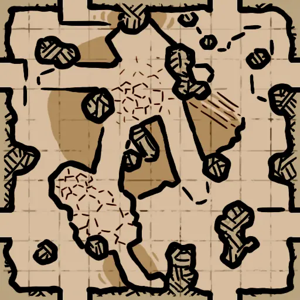
倒金字塔 (IceAbyss_ReversedPyramid)IceAbyss_ReversedPyramid_HR_D.json
IceAbyss_ReversedPyramid.png | 找到 2 个位置 | 自动范围: ±1600
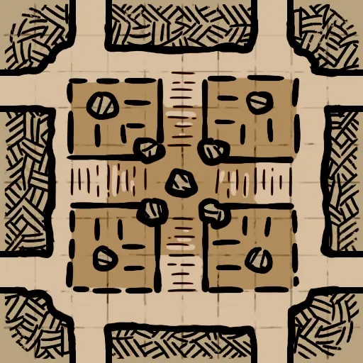
沉墟柱廊 (IceAbyss_SinkingPillars)IceAbyss_SinkingPillars_HR_D.json
IceAbyss_SinkingPillars.png | 找到 9 个位置 | 自动范围: ±1600
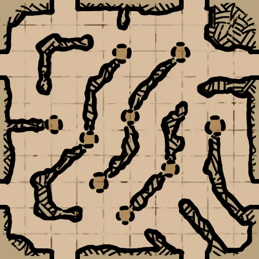
阶梯山丘 (IceAbyss_StaircaseHill)IceAbyss_StaircaseHill_HR_D.json
IceAbyss_StaircaseHill.png | 找到 1 个位置 | 自动范围: ±1600
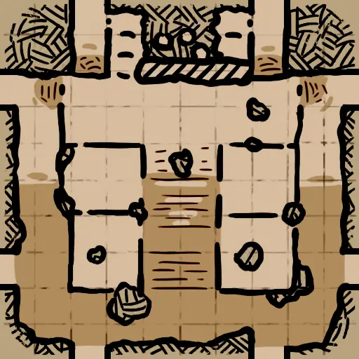
冰图1层
冰港 (IceCave_Cabin)IceCave_Cabin_Raft_HR_D.json
IceCave_Cabin_Raft.png | 找到 3 个位置 | 自动范围: ±1600

洞穴通道 (IceCave_CavePathway)IceCave_CavePathway_HR_D.json
IceCave_CavePathway.png | 找到 3 个位置 | 自动范围: ±1600
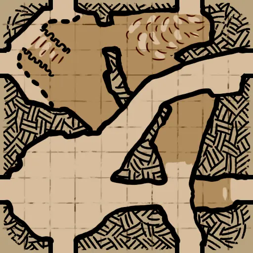
十字路口 (IceCave_CrossRoad)IceCave_CrossRoad_HR_D.json
IceCave_CrossRoad.png | 找到 1 个位置 | 自动范围: ±1600

岗哨 (IceCave_Guardpost)IceCave_Guardpost_HR_D.json
GuardPost.png | 找到 3 个位置 | 自动范围: ±1600
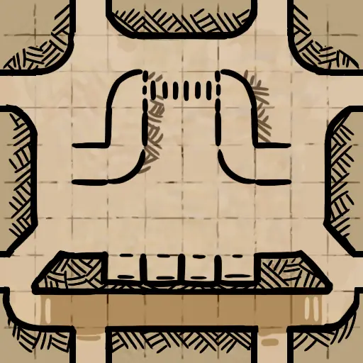
小屋 A (IceCave_Hut_A)IceCave_Hut_01_HR_D.json
IceCave_Hut_01.png | 找到 8 个位置 | 自动范围: ±1600

小屋 B (IceCave_Hut_B)IceCave_Hut_02_HR_D.json
IceCave_Hut_02.png | 找到 3 个位置 | 自动范围: ±1600
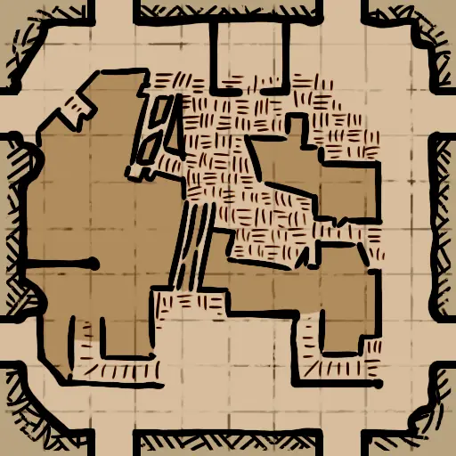
迷宫 (IceCave_Maze)IceCave_Maze_HR_D.json
IceCave_Maze.png | 找到 2 个位置 | 自动范围: ±1600
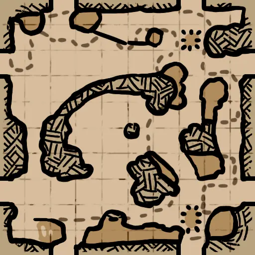
山隘 (IceCave_MountainPass)IceCave_MountainPass_D.json
IceCave_MountainPass.png | 找到 2 个位置 | 自动范围: ±1600

小道 A (IceCave_Path_A)IceCave_Path_HR_D.json
IceCave_Path.png | 找到 3 个位置 | 自动范围: ±1600

金字塔 (IceCave_Pyramid)IceCave_Pyramid_HR_D.json
IceCave_Pyramid.png | 找到 5 个位置 | 自动范围: ±1600
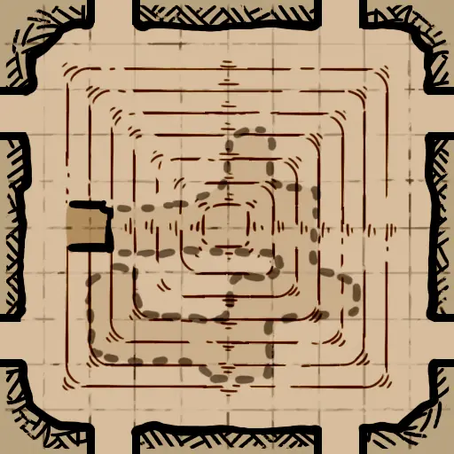
密室 (IceCave_Sanctum)IceCave_Sanctum_HR_D.json
IceCave_Sanctum.png | 找到 5 个位置 | 自动范围: ±1600

隧道 (IceCave_Turnnel)IceCave_Turnnel_01_HR_D.json
IceCave_Turnnel.png | 找到 7 个位置 | 自动范围: ±1600
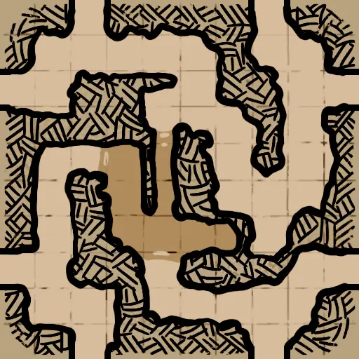
了望塔 (IceCave_Watchtower)IceCave_Watchtower_HR_D.json
IceCave_WatchTower.png | 找到 2 个位置 | 自动范围: ±1600
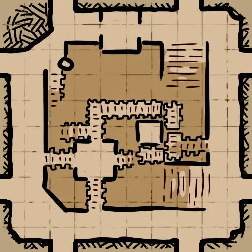
废墟3层炼狱
判罪之路 (Judgementroad)Inferno_Judgementroad_HR_D.json
Inferno_Judgementroad.png | 找到 2 个位置 | 自动范围: ±1600

恶魔巢穴 (Demon_Lairs)Inferno_LavaCorner_HR_D.json
Inferno_LavaCorner.png | 找到 1 个位置 | 自动范围: ±1600

恶魔王座 (Demon_Throne)ThroneRoom_02_D.json
ThroneRoom_02.png | 找到 1 个位置 | 自动范围: ±1600

废墟1层
城堡军械库 (Castle_Armory)Ruins_Armory_HR_D.json
Ruins_Armory.png | 找到 3 个位置 | 自动范围: ±1600

强盗营地 (Bandit_Camp)Ruins_BanditCamp_HR_D.json
Ruins_BanditCamp.png | 找到 5 个位置 | 自动范围: ±1600
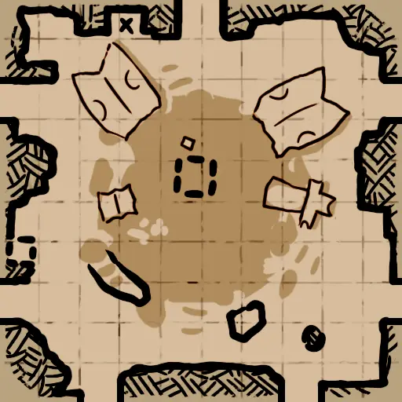
强盗森林 (Bandit_Forest)Ruins_BanditForest_HR_D.json
Ruins_BanditForest.png | 找到 1 个位置 | 自动范围: ±1600

Barbican_01_BossTest (Barbican_01_BossTest)Ruins_Barbican_01_BossTest_D.json
未找到 | 找到 4 个位置 | 自动范围: ±1600
未找到
瓮城 (Barbican)Ruins_Barbican_01_HR_D.json
Ruins_Barbican_01.png | 找到 4 个位置 | 自动范围: ±1600

洗澡堂 (Bath_House)Ruins_Bath_HR_D.json
Ruins_Bath.png | 找到 1 个位置 | 自动范围: ±1600

乱葬岗 (Outer_Cemetery)Ruins_Cemetery_01_HR_D.json
Ruins_Cemetery_01.png | 找到 2 个位置 | 自动范围: ±1600
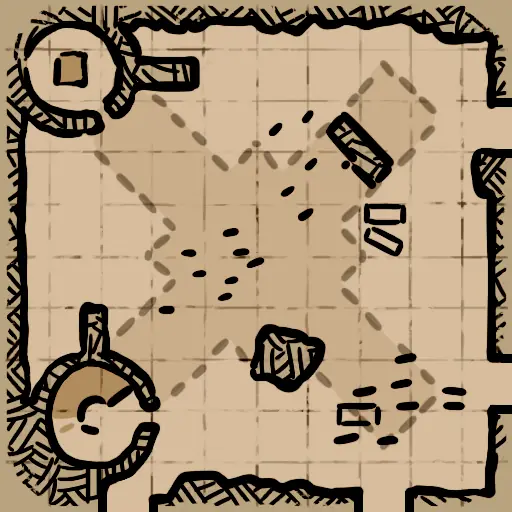
森林 B (Forest_B)Ruins_Forest_02_HR_D.json
Ruins_Forest_02.png | 找到 3 个位置 | 自动范围: ±1600

林间小路 (Forest_Path)Ruins_Forest_08_HR_D.json
Ruins_Forest_08.png | 找到 4 个位置 | 自动范围: ±1600

寂灭回廊 (ForsakenCloister)Ruins_ForsakenCloister_HR_D.json
Ruins_ForsakenCloister.png | 找到 1 个位置 | 自动范围: ±1600
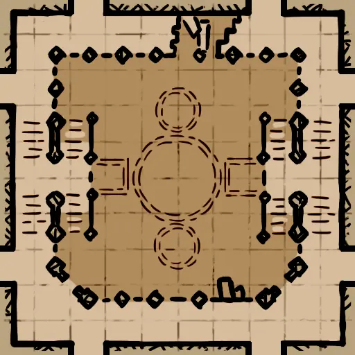
坟场 (Graveyard)Ruins_Grave_HR_D.json
Ruins_Grave.png | 找到 2 个位置 | 自动范围: ±1600

GreatHall_01_Destroyed_BossTest (GreatHall_01_Destroyed_BossTest)Ruins_GreatHall_01_Destroyed_BossTest_D.json
未找到 | 找到 4 个位置 | 自动范围: ±1600
未找到
礼拜堂 A (Greathall_A)Ruins_GreatHall_01_Destroyed_HR_D.json
Ruins_GreatHall_01_Destroyed.png | 找到 4 个位置 | 自动范围: ±1600

礼拜堂 C (Greathall_C)Ruins_GreatHall_03_Destroyed_HR_D.json
Ruins_GreatHall_03_Destroyed.png | 找到 5 个位置 | 自动范围: ±1600
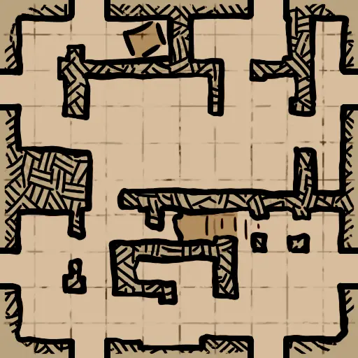
要塞 (Keep)Ruins_Keep_HR_D.json
Ruins_Keep.png | 找到 6 个位置 | 自动范围: ±1600

广场 A (Square_A)Ruins_Square_01_HR_D.json
Ruins_Square_01.png | 找到 4 个位置 | 自动范围: ±1600
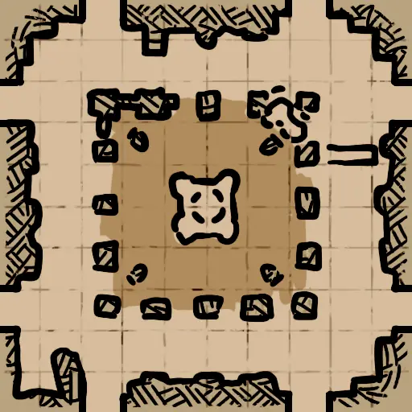
马厩 (Stables)Ruins_Stables_02_HR_D.json
Ruins_Stables_02.png | 找到 3 个位置 | 自动范围: ±1600

碎石地 (Stones)Ruins_Stonehenge_HR_D.json
Ruins_Stonehenge.png | 找到 1 个位置 | 自动范围: ±1600
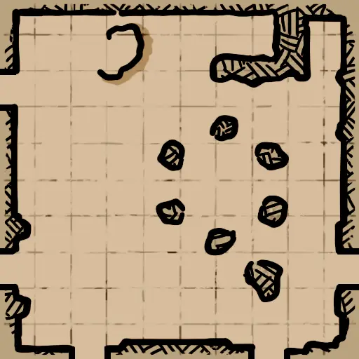
塔桥 (Tower_Bridge)Ruins_TowerBridge_Destroyed_HR_D.json
Ruins_TowerBridge_Destroyed.png | 找到 5 个位置 | 自动范围: ±1600
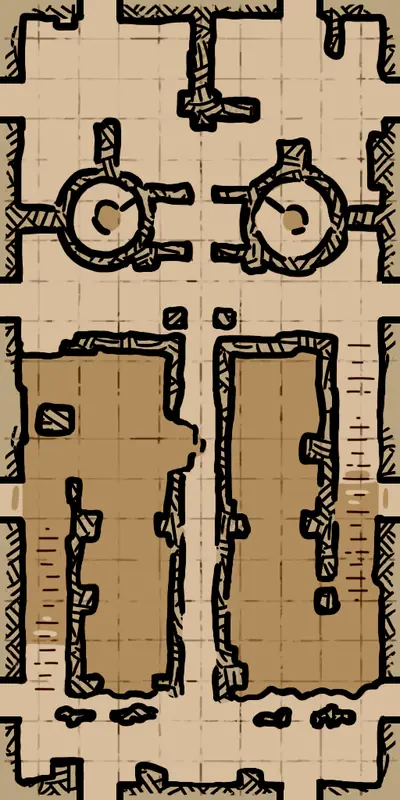
废弃塔楼 (Destroyed_Tower)Ruins_Tower_01_Destroyed_HR_D.json
Ruins_Tower_01_Destroyed.png | 找到 6 个位置 | 自动范围: ±1600

隐蔽圣坛 (Hidden_Altar)Ruins_UndergroundAltar_01_HR_D.json
Ruins_UndergroundAltar_01.png | 找到 3 个位置 | 自动范围: ±1600
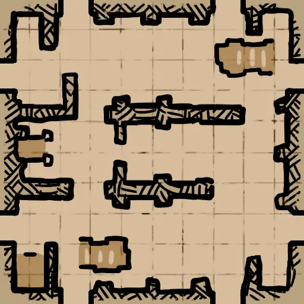
饮水池 (Watering_Hole)Ruins_WaterHole_HR_D.json
Ruins_WaterHole.png | 找到 1 个位置 | 自动范围: ±1600

水井 (Well)Ruins_Wells_02_HR_D.json
Ruins_Wells_02.png | 找到 6 个位置 | 自动范围: ±1600

水图
海盗监狱 (PiratePrison)ShipGraveyard_PiratePrison_HR_D.json
ShipGraveyard_PiratePrison.png | 找到 9 个位置 | 自动范围: ±6400
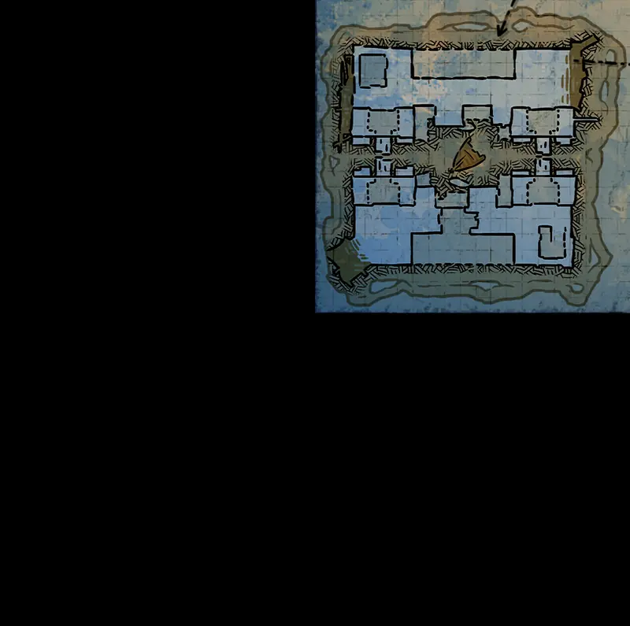